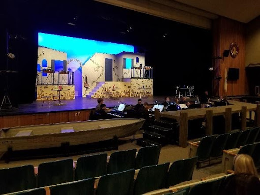
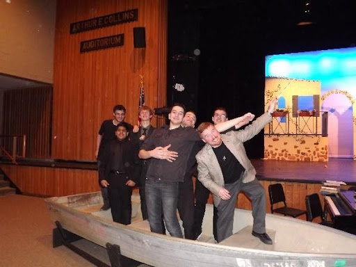

Music
Music is my passion. I am actively involved with my high school music community, where I am a member of the Tri-M Music Honor Society. I played piano in the pit band for high school musical productions and accompany select choir and chorus. I have completed The Royal Conservatory of Music (piano) Level 9 examination with honors.
Mamma Mia and Beauty and the Beast Musicals
